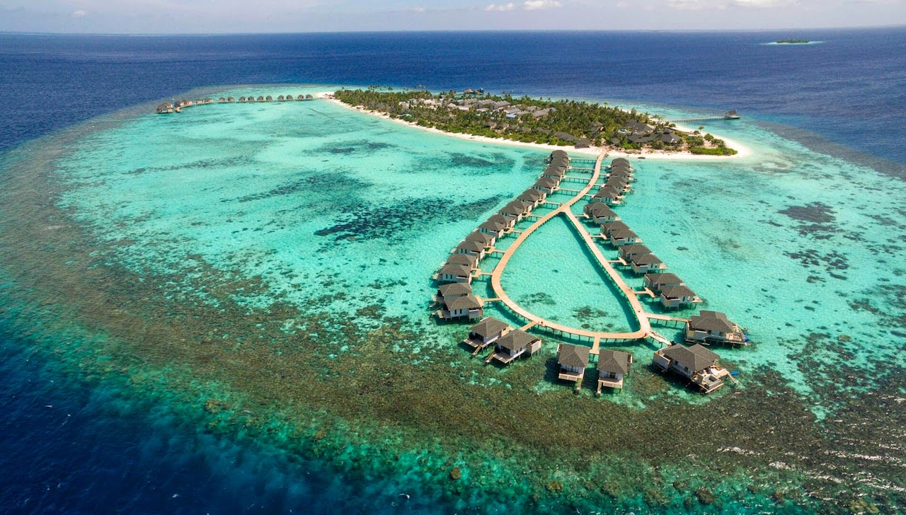
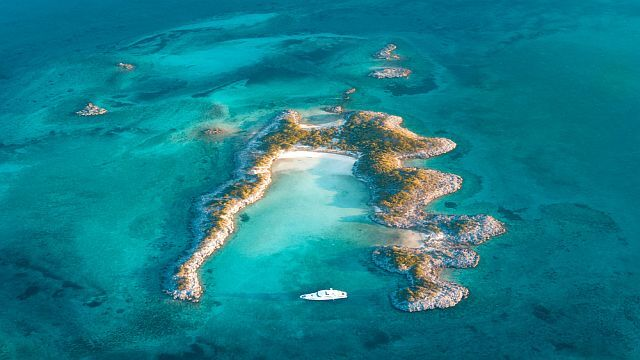

Moja strona przedstawia napiękniejsze miejsca na świcie
Malediwy – archipelag oraz państwo wyspiarskie o tej samej nazwie, położone na Oceanie Indyjskim, ok. 500 km na południowy zachód od południowego krańca Indii.

Bahamy - (Archipelag Wysp Bahama) leżą na Oceanie Atlantyckim, na wschód od Florydy, w sąsiedztwie Kuby. Bahamy stanowią część Brytyjskiej Wspólnoty Narodów.O Bahamach słyszał praktycznie każdy, pisano o nich książki, śpiewano piosenki, opowiadano legendy, zwłaszcza te związane z piratami. Bahamy składają się z ponad 700 wysp i wysepek z czego tylko 30 jest zamieszkanych 